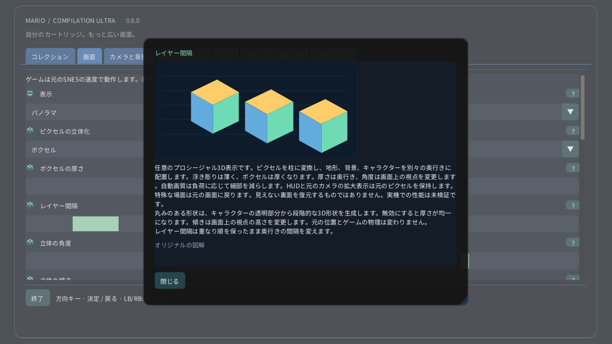

ピクセルの立体化

パソコンや携帯端末では画面 → ピクセルの立体化を開きます。まずピクセルの浮き彫りで控えめな奥行きを試し、次にボクセルに切り替えます。厚みは各ピクセルの立体の厚さ、間隔は重なり順を保ったままレイヤー間の距離を変えます。Questでは空間リモコンの立体ページを使います。時計のリューズはエリア全体から元の画面まで拡大できます。
- 0 · 元の2D
- 1 · ピクセルの浮き彫り
- 2 · ボクセル
任意のプロシージャル3D表示です。ピクセルを柱に変換し、地形、背景、キャラクターを別々の奥行きに配置します。浮き彫りは薄く、ボクセルは厚くなります。厚さは奥行き、角度は画面上の視点を変更します。自動画質は負荷に応じて細部を減らします。HUDと元のカメラの拡大表示は元のピクセルを保持します。特殊な場面は元の画面に戻ります。見えない裏面を復元するものではありません。実機での性能は未検証です。 丸みのある形状は、キャラクターの透明部分から段階的な3D形状を生成します。無効にすると厚さが均一になります。傾きは画面上の視点の高さを変更します。元の位置とゲームの物理は変わりません。 レイヤー間隔は重なり順を保ったまま奥行きの間隔を変えます。
図解設定ガイド
- ボクセルの厚さ
- 1–16 px
- レイヤー間隔
- 1–12 px
- 立体の角度
- −30° … +30°
- 立体の傾き
- −30° … +30°
- 丸みのあるボクセル形状
